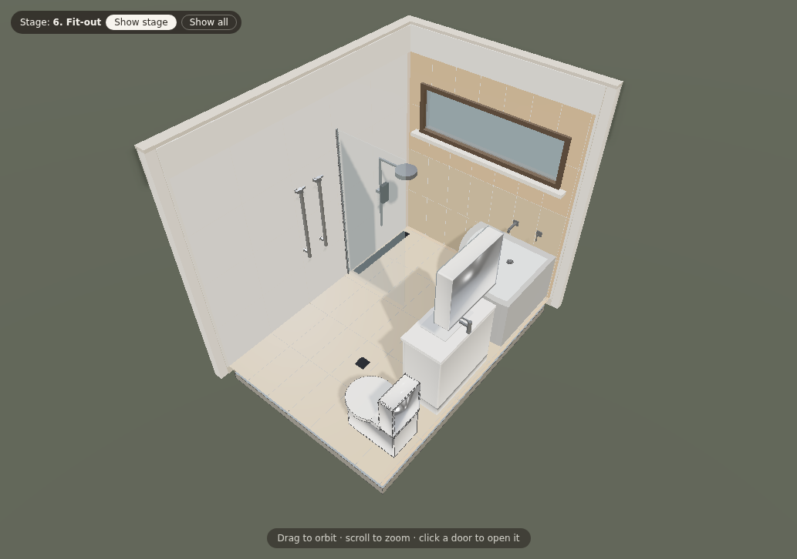

Reno Layouts
A browser-based floor-plan studio for renovation planning, forked from Alza. Draw or trace a plan in 2D, then raise it to 3D. An agent works the same live model through WebMCP tools, covering surveyed geometry, wall build-ups, fixture rough-in, tile set-out and construction-stage sheets. Runs client-side with no backend.